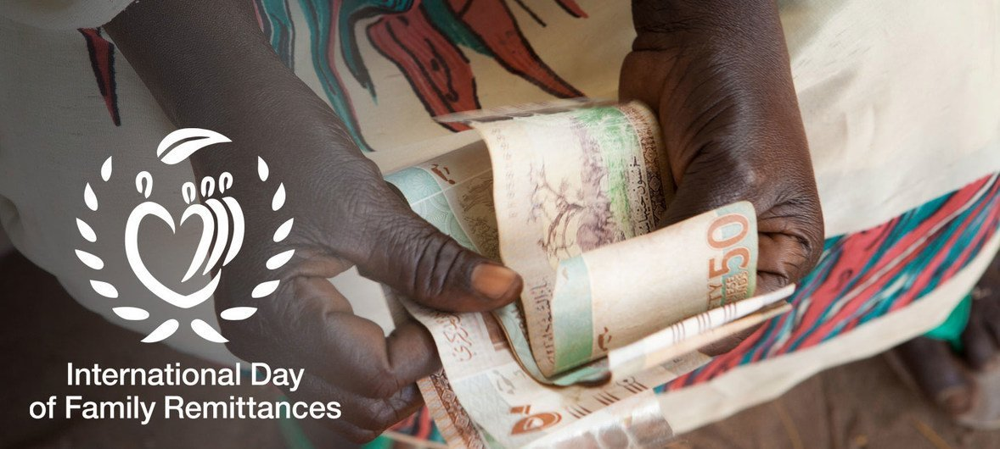

As remessas de um país são rendimentos transferidos pelos trabalhadores que nele residem para as suas famílias residentes noutro país.
Por exemplo, um emigrante português que reside em França pode enviar parte do seu ordenado para a família que reside em Portugal.
Para muitos países, incluindo Portugal, as remessas de emigrantes representam uma importante fonte de rendimento para as famílias. Em Portugal, o valor de remessas recebidas é superior ao valor de remessas pagas. Isto significa que o saldo das remessas de Portugal é historicamente positivo (os montantes registados a crédito são superiores aos montantes registados a débito) e, por isso, as remessas contribuem positivamente para as contas externas de Portugal.
Importancia desse dia
Este 16 de junho, as Nações Unidas marcam o Dia Internacional das Remessas de Famílias ressaltando a resiliência deste tipo de transações financeiras.
De acordo com a organização, os fluxos de remessas aumentaram cinco vezes nos últimos vinte anos. Uma performance capaz de contrariar ciclos de crises econômicas nos países destinatários.
Migrantes
Os tempos da pandemia são considerados “um teste para remessas globais.” Com as mudanças ocorridas no ano passado, tanto no meio dos trabalhadores migrantes como na diáspora, aumentou ainda mais a resiliência das remessas.
Recentemente, o Banco Mundial publicou um relatório revelando que em 2020 a queda nas remessas foi de 1,6% em relação a ano anterior, ao cair de US$ 548 bilhões para US$ 540 bilhões.
Este tipo de fluxos financeiros marca o “contrato social que liga os migrantes às suas famílias em casa”. Embora se acredite que o total envolvido chegue a bilhões, estima-se que famílias recebam em média entre US$ 200 a US$ 300 mensais.
O Dia Internacional das Remessas de Famílias foi proclamado pela Assembleia Geral das Nações Unidas em consideração aos mais de 200 milhões de migrantes que enviam dinheiro a mais de 800 milhões de familiares em seus países de origem.
Pandemia
A data evidencia ainda a grande resiliência destes trabalhadores, diante de situações de insegurança em contextos econômicos, desastres naturais, eventos climáticos e pandemia global.
O Pacto Global para uma Migração Segura, Ordenada e Regular defende a redução dos custos de transferência e a maior inclusão financeira através de remessas, definidas como pagamentos transfronteiriços envolvendo um valor relativamente pequeno mas vital para receptores em nações em desenvolvimento.
Apesar da limitação do valor quando contado de forma individual, a soma desses fluxos equivale ao triplo da assistência oficial ao desenvolvimento.